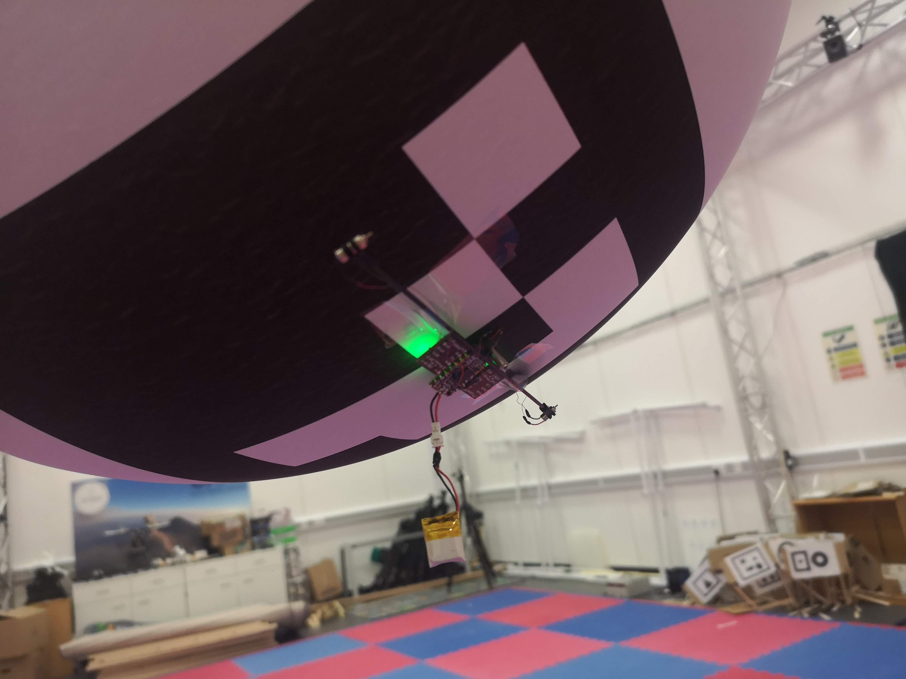

The Hive. Ongoing. My PhD project, the Hive, is a collective knowledge architecture for hybrid robot swarms. By enabling robots to share information via the cloud-based Hive, we see a measurable improvement in performance, transparency and network efficiency.
Collective transport. Coordinating multiple, decentralised robots to collectively find, lift and move an object. This is completed without any central control using local communication only.

BlimpleBee. 2021. A helium assited drone for indoor inspections and monitoring of complex 3D spaces. Driven by the vertical farming space, this project succesfully designed, built and tested one of the smallest autonomous blimps of its kind.

Fortitude. 2015. An autonomous surface vessel designed for crossing oceans. 3m, self-righting, internal power, twin drive, custom hull design with payload space for environmental monitoring.